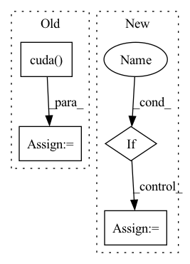

Pattern ID :2528

Before Change
// 下面是使用CFR
crf_model = CRF(self.num_token_type, batch_first=True)
if USE_CUDA:
crf_model = crf_model.cuda()
if not is_test:
log_likelihood = crf_model(ner_score, data_item["token_type_list"].to(torch.int64),
mask=data_item["mask_tokens"])
loss_ner = -log_likelihood
pred_ner = crf_model.decode(ner_score) // , mask=data_item["mask_tokens"]
// 下面使用的是Softmax
// loss_ner = F.softmax(ner_score, data_item["ner_type"])
After Change
// print("hello0")
// 下面是使用CFR
if USE_CUDA:
self.crf_model = self.crf_model.cuda()
if not is_test:
log_likelihood = self.crf_model(ner_score, data_item["token_type_list"].to(torch.int64),
mask=data_item["mask_tokens"])
In pattern: SUPERPATTERN
Frequency: 4
Non-data size: 4
Instances
Fragment ID: 8289150
Project Name: mangonihao/multiheadjointentityrelationextraction_simple
Commit Name: 3a8d46652627013ee302506e87489ee75fea8ae9
Time: 2021-03-08
Author: 2075419247@qq.com
File Name: modules/joint_model.py
M Class Name: JointModel
N Class Name: JointModel
M Method Name: forward(4)
N Method Name: forward(4)
M Parent Class: nn.Module
N Parent Class: nn.Module
M File Name: modules/joint_model.py
N File Name: modules/joint_model.py
M Start Line: 128
M End Line: 139
N Start Line: 130
N End Line: 165
'>
Before Change
mol_graph, semiF_features = mol_graph
if self.args.semiF_only:
semiF_features = np.stack([features.todense() for features in semiF_features])
semiF_features = torch.from_numpy(semiF_features).float().cuda()
return semiF_features
f_atoms, f_bonds, a2b, b2a, b2revb, a_scope, b_scope = mol_graph.get_components()
After Change
if self.args.features_only:
features_batch = torch.from_numpy(np.stack(features_batch)).float()
if self.args.cuda: // can"t use next(self.parameters()).is_cuda b/c no parameters
features_batch = features_batch.cuda()
return features_batch
'>
Fragment ID: 8289135
Project Name: aamini/chemprop
Commit Name: b458b250cc81267ae851a68cc6917be18204ee9d
Time: 2018-10-28
Author: swansonk.14@gmail.com
File Name: mpn.py
M Class Name: MPNEncoder
N Class Name: MPNEncoder
M Method Name: forward(3)
N Method Name: forward(3)
M Parent Class: nn.Module
N Parent Class: nn.Module
M File Name: mpn.py
N File Name: mpn.py
M Start Line: 122
M End Line: 315
N Start Line: 124
N End Line: 324
'>
Before Change
def forward(self, voting_map, targets=None):
batch_size, channels, width, height = voting_map.shape
voting_map = voting_map.view(batch_size, self.region_num, self.num_classes, width, height)
heatmap = torch.zeros((batch_size, self.num_classes, width, height), dtype=torch.float).cuda()
for i in range(self.num_classes):
heatmap[:, i, :, :] = self.deconv_filters(voting_map[:, :, i, :, :]).squeeze(dim=1)
return heatmap
After Change
def forward(self, voting_map, targets=None):
if self.model_v1:
batch_size, channels, width, height = voting_map.shape
voting_map = voting_map.view(batch_size, self.region_num, self.num_classes, width, height)
voting_map = voting_map.permute(0, 2, 1, 3, 4)
voting_map = voting_map.reshape(batch_size, -1, width, height)
heatmap = self.deconv_filters(voting_map)
'>
Fragment ID: 8289148
Project Name: nerminsamet/houghnet
Commit Name: b441d732dd6f90811cc153b24d8b7718558e4f36
Time: 2021-04-13
Author: nermin.samet@gmail.com
File Name: src/lib/models/networks/hough_module.py
M Class Name: Hough
N Class Name: Hough
M Method Name: forward(3)
N Method Name: forward(3)
M Parent Class: nn.Module
N Parent Class: nn.Module
M File Name: src/lib/models/networks/hough_module.py
N File Name: src/lib/models/networks/hough_module.py
M Start Line: 91
M End Line: 97
N Start Line: 117
N End Line: 123
'>
Before Change
if self.use_GPU:
h = h.cuda()
c = c.cuda()
x_list = []
for i in range(self.iteration):
After Change
x = F.relu(self.res_conv5(x) + resx)
x = self.conv(x)
if self.use_Contrast:
x = self.mix(fea1 = input, fea2 = x) // input: rain image, x: derained image
else:
x = x + input
'>
Fragment ID: 8289133
Project Name: shenzheng2000/sapnet-for-image-deraining
Commit Name: ec1d9e18796516691e65773583b14271cc658326
Time: 2021-08-11
Author: 69662345+ShenZheng2000@users.noreply.github.com
File Name: Modeling/network.py
M Class Name: SAPNet
N Class Name: SAPNet
M Method Name: forward(2)
N Method Name: forward(2)
M Parent Class: nn.Module
N Parent Class: nn.Module
M File Name: Modeling/network.py
N File Name: Modeling/network.py
M Start Line: 132
M End Line: 164
N Start Line: 225
N End Line: 261